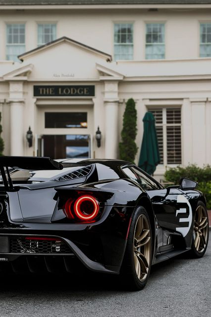
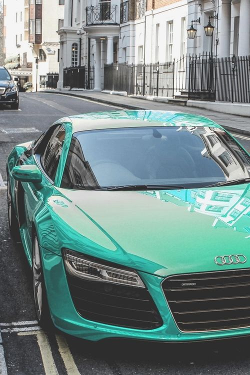
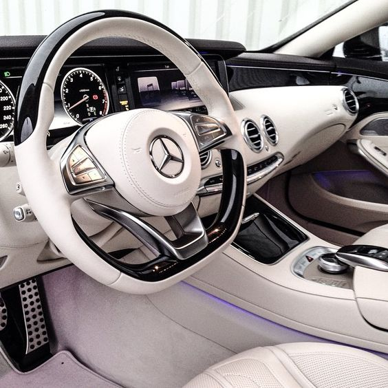
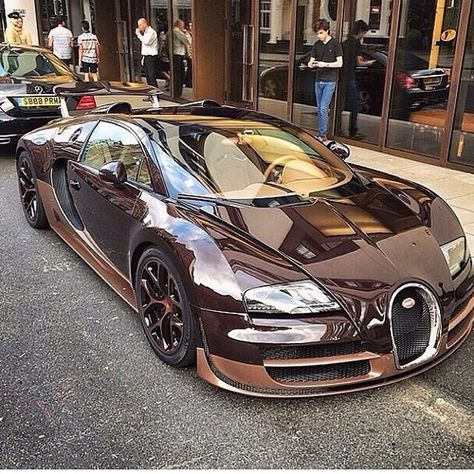

4. Classic Car vs Modern Car
Not only classic car but also some modern cars are loved by people. Let’s see some differences between classic cars and modern cars. Modern production techniques have removed much of the character from new cars. Mass production “systems” complete with soulless computers and robots on the production lines producing identical parts 24 hours a day, 7 days a week, are focused on one thing: meeting the targets and quotas set by the car manufacturers to maximize efficiency and shareholder profit.
Classic car production, on the other hand, was largely a manual process performed by craftsmen using simple tools complemented by decades of experience to create panels by hand and by eye. The results of this are creations that have withstood the hardships of daily usage and weathered the passage of time. Not all are like this, of course. Some were very poorly designed, and built with even less care, but this is what separates classic cars from cars that are merely old.
Mechanically, they are quite different, too. Modern car engines are effectively a sealed unit, comprising of components that are largely unserviceable by the average person. Simply speaking, most components are controlled by a central electronic brain, which takes inputs from the driver, and then filters them through systems such as the drive-by-wire throttle system, the traction control, electric steering, electronic clutch, the torque vectoring system, the ABS system, and so on.
All of these systems are designed to improve efficiency and safety, but on some level, they often rob the car of its feel and character. Older machines, in contrast, are the real deal. They are delicately balanced mechanical systems comprising hundreds or thousands of individual parts, all tuned to work together in harmony. The driver is a direct extension to the machine, providing inputs and receiving direct, unfiltered feedback through the controls, resulting in an authentic experience that is just not possible with the modern equivalent.
https://www.nytimes.com/2016/12/22/business/automakers-prepare-america-fewer-cars.html?_r=0
https://petrolicious.com/articles/why-do-people-still-love-classic-cars



